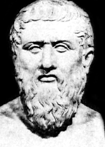

427 v. Chr.

In „Phaidon“ und späteren Werken hielt Platon verschiedene Ideen über das menschliche Denken fest. Vor über tausend Jahren vor der Erfindung des Computers brachte er die Begriffe „Denken“ und „Maschine“ in Zusammenhang.